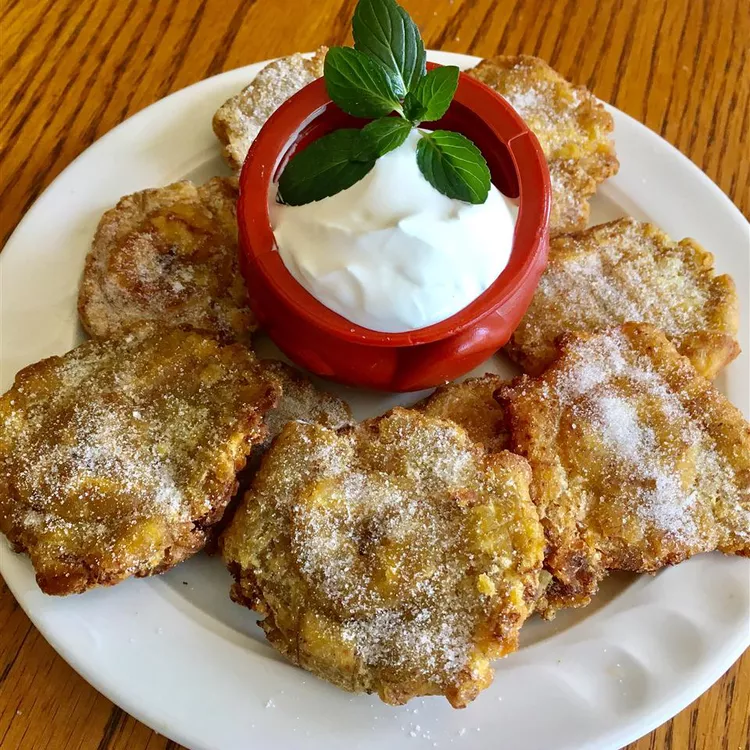

How to make Colombian patacones

These are fried plantains that have been smashed and fried a second time. It is essential you use very ripe plantains. This recipe is straight from my Colombian mother-in-law. Enjoy!
Ingredients
- ½ cup oil for frying
- 1 ripe plantain, peeled and cut into 1-inch rounds
- 1 pinch salt
Directions
- Place a plate, upside-down, onto a work surface.
- Heat oil in a large skillet over medium heat. Fry plantain slices in the hot oil until slightly browned, 2 to 3 minutes per side. Transfer plantain slices using a slotted spoon onto the upside-down plate, reserving oil in the skillet. Place a second plate, right-side up, onto the plantains. Smash the plantain slices by gently pressing the top plate into the bottom plate.
- Place the smashed plantains in the hot oil and fry until browned, 2 to 3 minutes per side. Transfer fried plantains to a paper towel-lined plate and sprinkle salt over plantains.